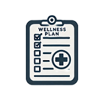
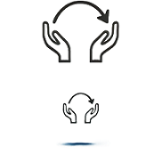

Discover the simple, effective process to holistic wellness for your team.
Step 1: Health Risk AssessmentsInitial assessments to understand employees' well-being. Health and mental health check-ins to identify risks early and develop a baseline understanding. |

Step 2: Customized Wellness PlansTailored programs for your workforce. Develop customized plans based on assessment results, including yoga, nutrition, and therapy sessions. |
Step 3: Delivery OptionsOn-site, off-site, and virtual programs. Flexible options to deliver wellness sessions wherever your team is, be it on-site, off-site, or virtual. |
Step 4: Progress TrackingRegular monitoring and prognosis evaluation. Monthly health assessments and reports to track progress, including prognosis evaluations for tailored care. |

Step 5: Continuous SupportOngoing check-ins and consultations. Regular check-ins, consultations, and resources to ensure sustained well-being improvements. |
Contact us today to learn more about how our program can benefit your team.
Get Started